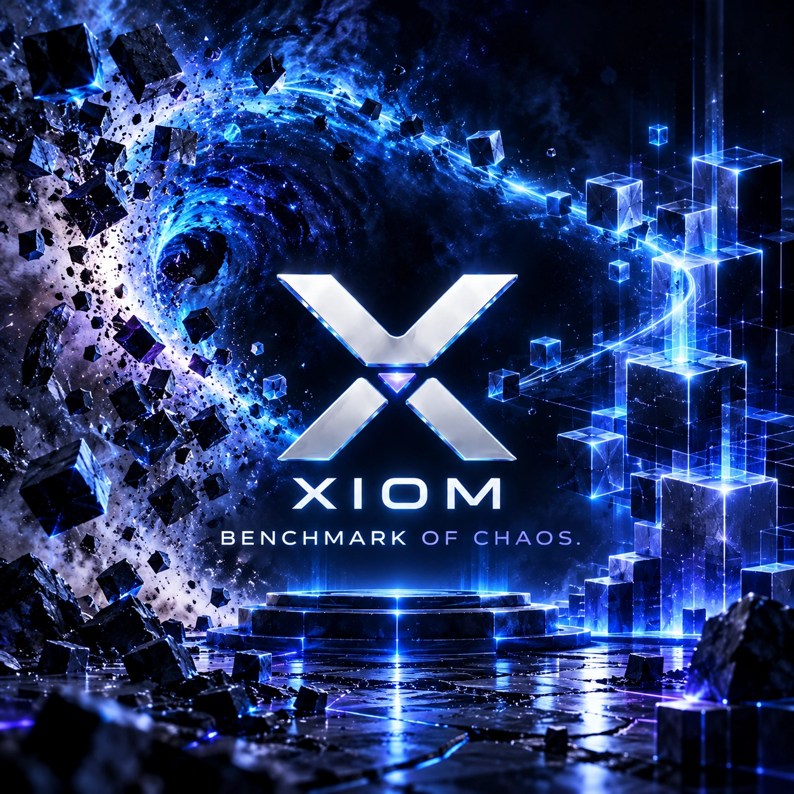
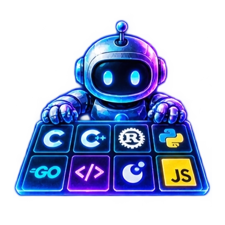
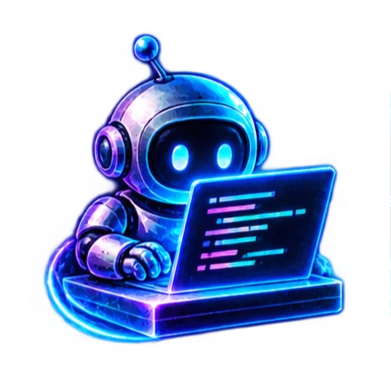
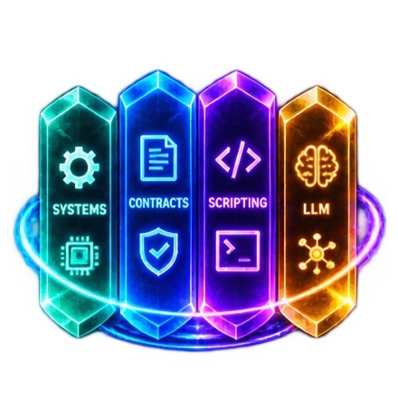
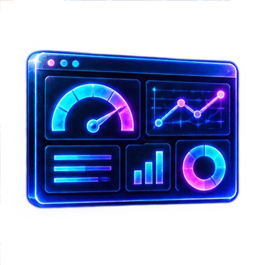
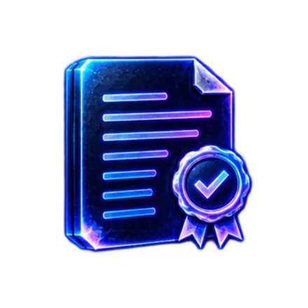
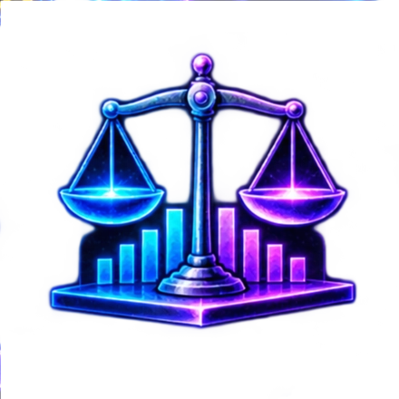
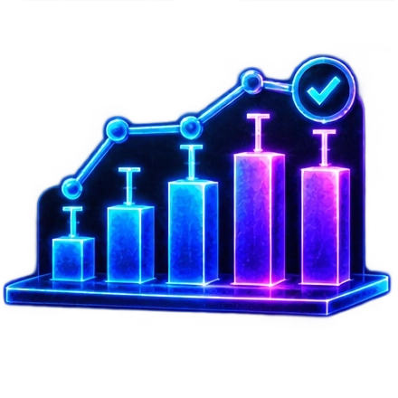

XIOM project -- offline benchmark
Benchmark of Chaos
A language-safety benchmark platform: it compares programming languages on their ability to produce safe, correct systems code, using the same LLM as the code writer. Not an LLM benchmark -- a language benchmark.
The benchmark runs from a local checkout. The first baseline results are published below, with the report, proof bundle and raw session. Nothing is claimed beyond what those files show.
What it tests
| Arena | Languages | Focus |
|---|---|---|
| Systems | C, C++, Rust, Zig, Go, Ada, XIOM | Memory safety, crashes, contracts, hot reload |
| Contracts | C and C++ contracts, Rust and Prusti, Ada and SPARK, XIOM, Zig | Contract verification effectiveness |
| Scripting | Python, Node.js, Bun, Lua, XIOM (four execution modes) | Correctness, speed, throughput, startup latency |
| LLM | The same matrix, written by the model | Does AI-produced code pass each arena's tests |
Results -- first baseline
The first published run: the systems arena, one baseline session across seven languages and six tasks on the pinned toolchain. One sample per language and task -- a baseline, not a statistical claim. The full report, proof bundle and raw session are linked below.
The results file could not be loaded (bench/latest.json).
Safety probe (t8)
Twelve hazard probes per language, three repeats, with observed canary and sentinel evidence. The index is the benchmark's t8 safety index (higher is better in its scoring contract); probe-level evidence is in the report.
Per-language summary
Caveats: per-language values are means of per-session means; unmeasured metrics are not shown; this is a single baseline run. Methodology and disputes live in the benchmark's fairness documents.
Evidence: report JSON -- proof bundle -- raw session.
How it runs

Language matrix
Systems, contracts, scripting and LLM arenas under one harness.

Same LLM for all
The same LLM writes the code for every language -- a language benchmark, not an LLM benchmark.

Arenas
C, C++, Rust, Zig, Go, Ada and XIOM; the contracts arena adds Prusti and SPARK.
Offline run
One Docker Compose command builds the toolchains and installs the pinned, SHA256-verified XIOM release; the dashboard opens on localhost.

Dashboard
Version and digest are surfaced next to every session, or the UI says "not recorded" -- it never guesses.
Digest bindings
Every result is bound to the image digest and a methodology contract version.

Methodology contract
Sessions record the exact runtime and compiler version of every language; reports warn when a selection would mix versions.

Fairness
The fairness and methodology documents are maintained with the benchmark; disputed results are addressed there, not in marketing.
Reproducibility
Arena profiles need no API keys; LLM profiles use keys you provide, and a run is rebuilt from the checkout.

Results
First baseline published: seven languages, six tasks, one systems-arena session. See the results above.
Phase 1: the benchmark runs offline from a local checkout. The first baseline is published above; the fairness and methodology documents are maintained with the benchmark.